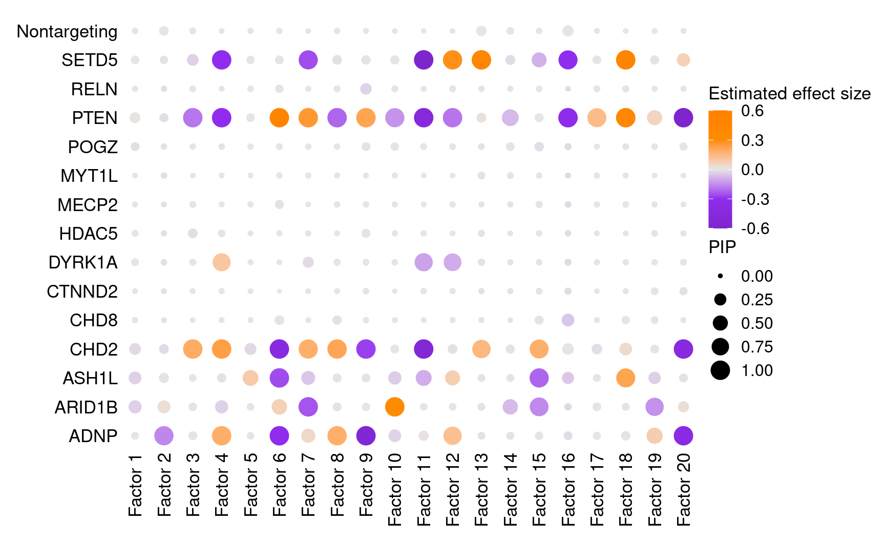
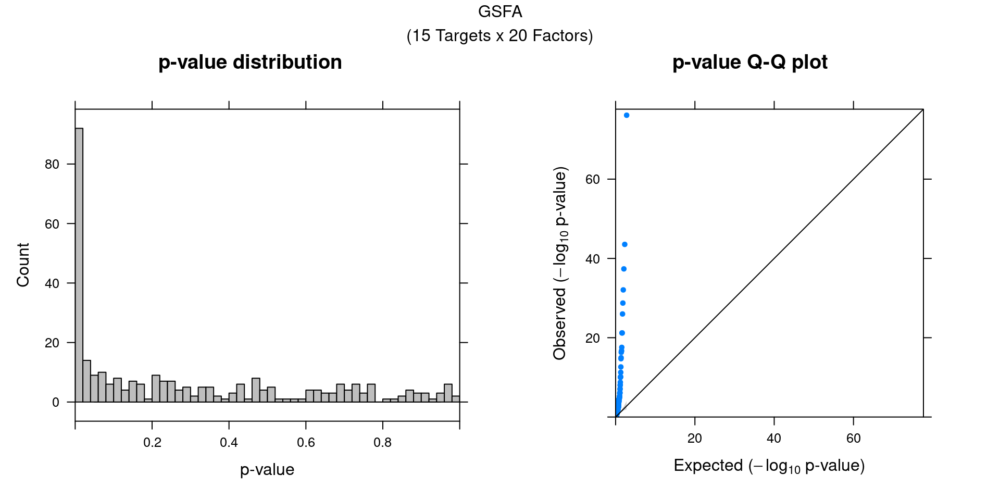
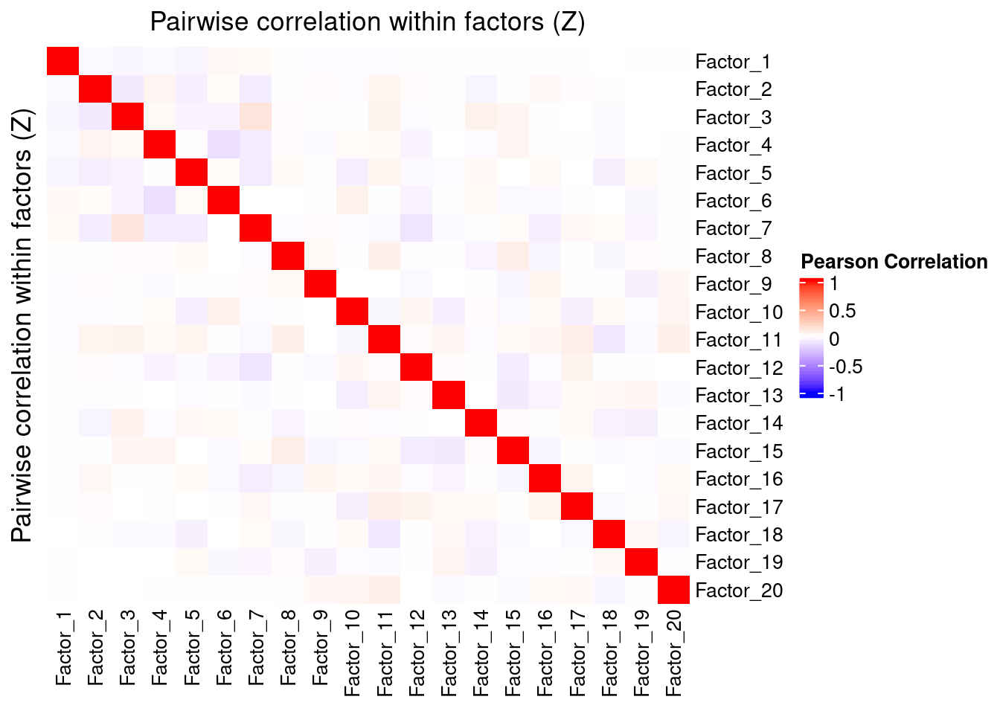
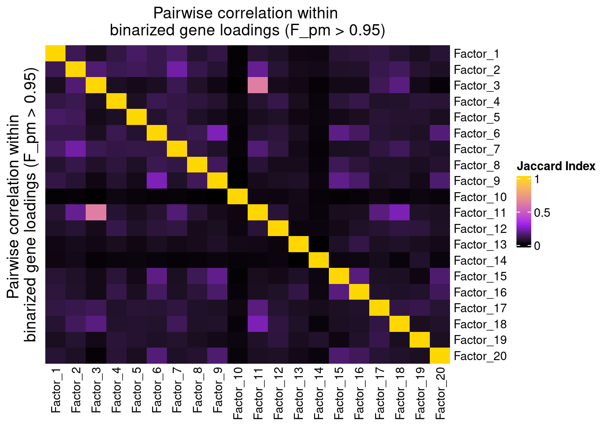
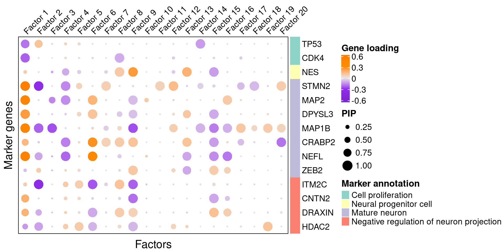
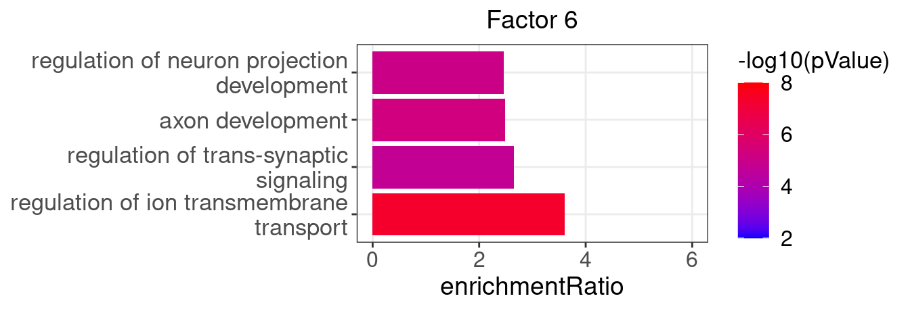
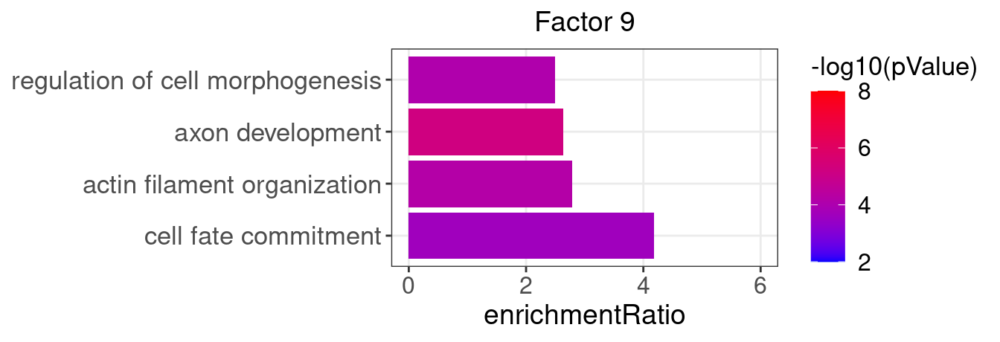
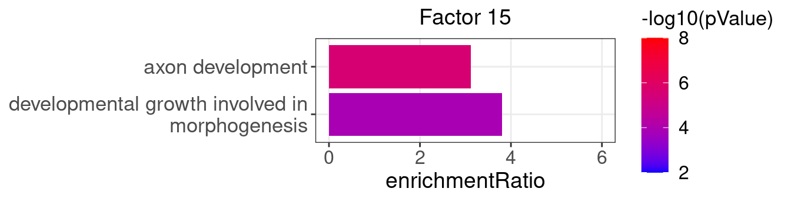

Compare GSFA with MUSIC Results on LUHMES CROP-seq Data
Kaixuan Luo
Last updated: 2022-07-22
Checks: 7 0
Knit directory: GSFA_analysis/
This reproducible R Markdown analysis was created with workflowr (version 1.7.0). The Checks tab describes the reproducibility checks that were applied when the results were created. The Past versions tab lists the development history.
Great! Since the R Markdown file has been committed to the Git repository, you know the exact version of the code that produced these results.
Great job! The global environment was empty. Objects defined in the global environment can affect the analysis in your R Markdown file in unknown ways. For reproduciblity it's best to always run the code in an empty environment.
The command set.seed(20220524) was run prior to running the code in the R Markdown file. Setting a seed ensures that any results that rely on randomness, e.g. subsampling or permutations, are reproducible.
Great job! Recording the operating system, R version, and package versions is critical for reproducibility.
Nice! There were no cached chunks for this analysis, so you can be confident that you successfully produced the results during this run.
Great job! Using relative paths to the files within your workflowr project makes it easier to run your code on other machines.
Great! You are using Git for version control. Tracking code development and connecting the code version to the results is critical for reproducibility.
The results in this page were generated with repository version 25954e1. See the Past versions tab to see a history of the changes made to the R Markdown and HTML files.
Note that you need to be careful to ensure that all relevant files for the analysis have been committed to Git prior to generating the results (you can use wflow_publish or wflow_git_commit). workflowr only checks the R Markdown file, but you know if there are other scripts or data files that it depends on. Below is the status of the Git repository when the results were generated:
Ignored files:
Ignored: .Rhistory
Ignored: .Rproj.user/
Untracked files:
Untracked: analysis/compare_gsfa_music_TCells.Rmd
Untracked: analysis/interpret_gsfa_LUHMES.Rmd
Untracked: analysis/music_TCells_data.Rmd
Untracked: analysis/spca_LUHMES_data.Rmd
Untracked: code/music_LUHMES_Yifan.R
Untracked: code/plotting_functions.R
Untracked: code/run_music_LUHMES.R
Untracked: code/run_music_LUHMES_data.sbatch
Untracked: code/run_music_Tcells_stimulated_data.R
Untracked: code/run_music_Tcells_stimulated_data.sbatch
Untracked: code/run_music_Tcells_unstimulated_data.R
Untracked: code/run_music_Tcells_unstimulated_data.sbatch
Untracked: code/run_sceptre_LUHMES_data.sbatch
Untracked: code/run_sceptre_Tcells_stimulated_data.sbatch
Untracked: code/run_sceptre_Tcells_unstimulated_data.sbatch
Untracked: code/run_spca_LUHMES.R
Untracked: code/run_spca_TCells.R
Untracked: code/sceptre_LUHMES_data.R
Untracked: code/sceptre_Tcells_stimulated_data.R
Untracked: code/sceptre_Tcells_unstimulated_data.R
Unstaged changes:
Modified: analysis/music_LUHMES_data.Rmd
Modified: analysis/sceptre_LUHMES_data.Rmd
Modified: code/run_sceptre_cropseq_data.sbatch
Modified: code/sceptre_analysis.R
Note that any generated files, e.g. HTML, png, CSS, etc., are not included in this status report because it is ok for generated content to have uncommitted changes.
These are the previous versions of the repository in which changes were made to the R Markdown (analysis/compare_gsfa_music_LUHMES.Rmd) and HTML (docs/compare_gsfa_music_LUHMES.html) files. If you've configured a remote Git repository (see ?wflow_git_remote), click on the hyperlinks in the table below to view the files as they were in that past version.
| File | Version | Author | Date | Message |
|---|---|---|---|---|
| Rmd | 25954e1 | kevinlkx | 2022-07-22 | add GSFA results for LUHMES data |
GSFA results
The processed dataset consists of 8708 neural progenitor cells that belong to one of the 15 perturbation conditions (CRISPR knock-down of 14 neurodevelopmental genes, and negative control). Top 6000 genes ranked by deviance statistics were kept. And GSFA was performed on the data with 20 factors specified.
Load necessary packages and data
library(data.table)
library(Matrix)
library(tidyverse)
library(ggplot2)
theme_set(theme_bw() + theme(plot.title = element_text(size = 14, hjust = 0.5),
axis.title = element_text(size = 14),
axis.text = element_text(size = 12),
legend.title = element_text(size = 13),
legend.text = element_text(size = 12),
panel.grid.minor = element_blank())
)
library(gridExtra)
library(ComplexHeatmap)
library(kableExtra)
library(WebGestaltR)
source("/project2/xinhe/yifan/Factor_analysis/analysis_website_for_Kevin/scripts/plotting_functions.R")
data_folder <- "/project2/xinhe/yifan/Factor_analysis/LUHMES/"The first thing we need is the output of GSFA fit_gsfa_multivar() run. The lighter version containing just the posterior mean estimates and LFSR of perturbation-gene effects is enough.
fit <- readRDS(paste0(data_folder,
"gsfa_output_detect_01/use_negctrl/All.gibbs_obj_k20.svd_negctrl.seed_14314.light.rds"))
gibbs_PM <- fit$posterior_means
lfsr_mat <- fit$lfsr[, -ncol(fit$lfsr)]
total_effect <- fit$total_effect[, -ncol(fit$total_effect)]
KO_names <- colnames(lfsr_mat)We also need the cell by perturbation matrix which was used as input \(G\) for GSFA.
metadata <- readRDS(paste0(data_folder, "processed_data/merged_metadata.rds"))
G_mat <- metadata[, 4:18]Finally, we load the mapping from gene name to ENSEMBL ID for all 6k genes used in GSFA, as well as selected neuronal marker genes. This is specific to this study and analysis.
feature.names <- data.frame(fread(paste0(data_folder, "GSE142078_raw/GSM4219576_Run2_genes.tsv.gz"),
header = FALSE), stringsAsFactors = FALSE)
genes_df <- feature.names[match(rownames(lfsr_mat), feature.names$V1), ]
names(genes_df) <- c("ID", "Name")
interest_df <- readRDS(paste0(data_folder, "processed_data/selected_neuronal_markers.rds"))Factor ~ Perturbation Association
Perturbation effects on factors
Fisrt of all, we look at the estimated effects of gene perturbations on factors inferred by GSFA.
We found that targeting of 7 genes, ADNP, ARID1B, ASH1L, CHD2, DYRK1A, PTEN, and SETD5, has significant effects (PIP > 0.95) on at least 1 of the 20 inferred factors.
All targets and factors (Figure S6A):
dotplot_beta_PIP(t(gibbs_PM$Gamma_pm), t(gibbs_PM$beta_pm),
marker_names = KO_names,
reorder_markers = c(KO_names[KO_names!="Nontargeting"], "Nontargeting"),
inverse_factors = F) +
coord_flip()
## Similar visualization using GSFA built-in functions:
GSFA::dotplot_beta_PIP(fit,
target_names = KO_names,
reorder_targets = c(KO_names[KO_names!="Nontargeting"], "Nontargeting"))Here is a closer look at the estimated effects of selected perturbations on selected factors (Figure 5A):
targets <- c("ADNP", "ARID1B", "ASH1L", "CHD2", "DYRK1A", "PTEN", "SETD5")
complexplot_perturbation_factor(gibbs_PM$Gamma_pm[-nrow(gibbs_PM$Gamma_pm), ],
gibbs_PM$beta_pm[-nrow(gibbs_PM$beta_pm), ],
marker_names = KO_names,
reorder_markers = targets,
reorder_factors = c(6, 9, 15))
## Similar visualization using GSFA built-in functions:
GSFA::dotplot_beta_PIP(fit,
target_names = KO_names,
reorder_targets = targets, reorder_factors = c(6, 9, 15))Factor-perturbation association p values
We can also assess the correlations between each pair of perturbation and inferred factor.
The distribution of correlation p values show significant signals.
gibbs_res_tb <- make_gibbs_res_tb(gibbs_PM, G_mat, compute_pve = F)
heatmap_matrix <- gibbs_res_tb %>% select(starts_with("pval"))
rownames(heatmap_matrix) <- 1:nrow(heatmap_matrix)
colnames(heatmap_matrix) <- colnames(G_mat)
summ_pvalues(unlist(heatmap_matrix),
title_text = "GSFA\n(15 Targets x 20 Factors)")
Factor Interpretation
Correlation within factors
Since the GSFA model does not enforce orthogonality among factors, we first inspect the pairwise correlation within them to see if there is any redundancy. As we can see below, the inferred factors are mostly independent of each other.
plot_pairwise.corr_heatmap(input_mat_1 = gibbs_PM$Z_pm,
corr_type = "pearson",
name_1 = "Pairwise correlation within factors (Z)",
label_size = 10)
plot_pairwise.corr_heatmap(input_mat_1 = (gibbs_PM$F_pm > 0.95) * 1,
corr_type = "jaccard",
name_1 = "Pairwise correlation within \nbinarized gene loadings (F_pm > 0.95)",
label_size = 10)
Gene loading in factors
To understand these latent factors, we inspect the loadings (weights) of several marker genes for neuron maturation and differentiation in them.
| protein_name | gene_name | type | gene_ID |
|---|---|---|---|
| TP53 | TP53 | Cell proliferation | ENSG00000141510 |
| CDK4 | CDK4 | Cell proliferation | ENSG00000135446 |
| Nestin | NES | Neural progenitor cell | ENSG00000132688 |
| STMN2 | STMN2 | Mature neuron | ENSG00000104435 |
| MAP2 | MAP2 | Mature neuron | ENSG00000078018 |
| DPYSL3 | DPYSL3 | Mature neuron | ENSG00000113657 |
| MAP1B | MAP1B | Mature neuron | ENSG00000131711 |
| CRABP2 | CRABP2 | Mature neuron | ENSG00000143320 |
| NEFL | NEFL | Mature neuron | ENSG00000277586 |
| ZEB2 | ZEB2 | Mature neuron | ENSG00000169554 |
| ITM2C | ITM2C | Negative regulation of neuron projection | ENSG00000135916 |
| CNTN2 | CNTN2 | Negative regulation of neuron projection | ENSG00000184144 |
| DRAXIN | DRAXIN | Negative regulation of neuron projection | ENSG00000162490 |
| HDAC2 | HDAC2 | Negative regulation of neuron projection | ENSG00000196591 |
We visualize both the gene PIPs (dot size) and gene weights (dot color) in all factors (Figure S6B):
complexplot_gene_factor(genes_df, interest_df, gibbs_PM$F_pm, gibbs_PM$W_pm)
A closer look at some factors that are associated with perturbations (Figure 5C):
complexplot_gene_factor(genes_df, interest_df, gibbs_PM$F_pm, gibbs_PM$W_pm,
reorder_factors = c(6, 9, 15))
GO enrichment analysis in factors
To further characterize these latent factors, we perform GO (gene ontology) enrichment analysis of genes loaded on the factors using WebGestalt.
Foreground genes: genes w/ non-zero loadings in each factor (gene PIP > 0.95);
Background genes: all 6000 genes used in GSFA;
Statistical test: hypergeometric test (over-representation test);
Gene sets: GO Slim "Biological Process" (non-redundant).
## The "WebGestaltR" tool needs Internet connection.
enrich_db <- "geneontology_Biological_Process_noRedundant"
PIP_mat <- gibbs_PM$F_pm
enrich_res_by_factor <- list()
for (i in 1:ncol(PIP_mat)){
enrich_res_by_factor[[i]] <-
WebGestaltR::WebGestaltR(enrichMethod = "ORA",
organism = "hsapiens",
enrichDatabase = enrich_db,
interestGene = genes_df[PIP_mat[, i] > 0.95, ]$ID,
interestGeneType = "ensembl_gene_id",
referenceGene = genes_df$ID,
referenceGeneType = "ensembl_gene_id",
isOutput = F)
}Several GO “biological process” terms related to neuronal development are enriched in factors 4, 9, and 16 (Figure 5D):
factor_indx <- 6
terms_of_interest <- c("regulation of ion transmembrane transport",
"regulation of trans-synaptic signaling",
"axon development",
"regulation of neuron projection development")
barplot_top_enrich_terms(enrich_res_by_factor[[factor_indx]],
terms_of_interest = terms_of_interest,
str_wrap_length = 35, pval_max = 8, FC_max = 6) +
labs(title = paste0("Factor ", factor_indx),
x = "Fold of enrichment")
factor_indx <- 9
terms_of_interest <- c("actin filament organization",
"cell fate commitment",
"axon development",
"regulation of cell morphogenesis")
barplot_top_enrich_terms(enrich_res_by_factor[[factor_indx]],
terms_of_interest = terms_of_interest,
str_wrap_length = 35, pval_max = 8, FC_max = 6) +
labs(title = paste0("Factor ", factor_indx),
x = "Fold of enrichment")
factor_indx <- 15
terms_of_interest <- c("developmental growth involved in morphogenesis",
"axon development")
barplot_top_enrich_terms(enrich_res_by_factor[[factor_indx]],
terms_of_interest = terms_of_interest,
str_wrap_length = 35, pval_max = 8, FC_max = 6) +
labs(title = paste0("Factor ", factor_indx),
x = "Fold of enrichment")
Session Information
sessionInfo()R version 4.0.4 (2021-02-15)
Platform: x86_64-pc-linux-gnu (64-bit)
Running under: Scientific Linux 7.4 (Nitrogen)
Matrix products: default
BLAS/LAPACK: /software/openblas-0.3.13-el7-x86_64/lib/libopenblas_haswellp-r0.3.13.so
locale:
[1] LC_CTYPE=en_US.UTF-8 LC_NUMERIC=C
[3] LC_TIME=en_US.UTF-8 LC_COLLATE=en_US.UTF-8
[5] LC_MONETARY=en_US.UTF-8 LC_MESSAGES=en_US.UTF-8
[7] LC_PAPER=en_US.UTF-8 LC_NAME=C
[9] LC_ADDRESS=C LC_TELEPHONE=C
[11] LC_MEASUREMENT=en_US.UTF-8 LC_IDENTIFICATION=C
attached base packages:
[1] grid stats graphics grDevices utils datasets methods
[8] base
other attached packages:
[1] lattice_0.20-45 WebGestaltR_0.4.4 kableExtra_1.3.4
[4] ComplexHeatmap_2.6.2 gridExtra_2.3 forcats_0.5.1
[7] stringr_1.4.0 dplyr_1.0.8 purrr_0.3.4
[10] readr_2.1.2 tidyr_1.2.0 tibble_3.1.6
[13] ggplot2_3.3.5 tidyverse_1.3.1 Matrix_1.4-1
[16] data.table_1.14.2
loaded via a namespace (and not attached):
[1] matrixStats_0.61.0 fs_1.5.2 lubridate_1.8.0
[4] doParallel_1.0.17 webshot_0.5.2 RColorBrewer_1.1-3
[7] httr_1.4.2 rprojroot_2.0.2 doRNG_1.8.2
[10] tools_4.0.4 backports_1.4.1 bslib_0.3.1
[13] utf8_1.2.2 R6_2.5.1 DBI_1.1.2
[16] BiocGenerics_0.36.1 colorspace_2.0-3 GetoptLong_1.0.5
[19] withr_2.5.0 tidyselect_1.1.2 compiler_4.0.4
[22] git2r_0.30.1 cli_3.2.0 rvest_1.0.2
[25] Cairo_1.5-15 xml2_1.3.3 labeling_0.4.2
[28] sass_0.4.1 scales_1.2.0 apcluster_1.4.10
[31] systemfonts_1.0.4 digest_0.6.29 R.utils_2.11.0
[34] svglite_2.0.0 rmarkdown_2.13 pkgconfig_2.0.3
[37] htmltools_0.5.2 highr_0.9 dbplyr_2.1.1
[40] fastmap_1.1.0 rlang_1.0.2 GlobalOptions_0.1.2
[43] readxl_1.4.0 rstudioapi_0.13 farver_2.1.0
[46] shape_1.4.6 jquerylib_0.1.4 generics_0.1.2
[49] jsonlite_1.8.0 R.oo_1.24.0 magrittr_2.0.3
[52] Rcpp_1.0.9 munsell_0.5.0 S4Vectors_0.28.1
[55] fansi_1.0.3 R.methodsS3_1.8.1 lifecycle_1.0.1
[58] stringi_1.7.6 whisker_0.4 yaml_2.3.5
[61] plyr_1.8.6 parallel_4.0.4 promises_1.2.0.1
[64] crayon_1.5.1 haven_2.5.0 pander_0.6.5
[67] circlize_0.4.14 hms_1.1.1 knitr_1.38
[70] pillar_1.7.0 igraph_1.2.11 rjson_0.2.21
[73] rngtools_1.5.2 reshape2_1.4.4 codetools_0.2-18
[76] stats4_4.0.4 reprex_2.0.1 glue_1.6.2
[79] evaluate_0.15 modelr_0.1.8 foreach_1.5.2
[82] png_0.1-7 vctrs_0.4.1 tzdb_0.3.0
[85] httpuv_1.6.5 cellranger_1.1.0 gtable_0.3.0
[88] clue_0.3-60 assertthat_0.2.1 xfun_0.30
[91] broom_0.8.0 later_1.3.0 viridisLite_0.4.0
[94] iterators_1.0.14 IRanges_2.24.1 cluster_2.1.2
[97] workflowr_1.7.0 ellipsis_0.3.2
sessionInfo()R version 4.0.4 (2021-02-15) Platform: x86_64-pc-linux-gnu (64-bit) Running under: Scientific Linux 7.4 (Nitrogen)
Matrix products: default BLAS/LAPACK: /software/openblas-0.3.13-el7-x86_64/lib/libopenblas_haswellp-r0.3.13.so
locale: [1] LC_CTYPE=en_US.UTF-8 LC_NUMERIC=C
[3] LC_TIME=en_US.UTF-8 LC_COLLATE=en_US.UTF-8
[5] LC_MONETARY=en_US.UTF-8 LC_MESSAGES=en_US.UTF-8
[7] LC_PAPER=en_US.UTF-8 LC_NAME=C
[9] LC_ADDRESS=C LC_TELEPHONE=C
[11] LC_MEASUREMENT=en_US.UTF-8 LC_IDENTIFICATION=C
attached base packages: [1] grid stats graphics grDevices utils datasets methods
[8] base
other attached packages: [1] lattice_0.20-45 WebGestaltR_0.4.4 kableExtra_1.3.4
[4] ComplexHeatmap_2.6.2 gridExtra_2.3 forcats_0.5.1
[7] stringr_1.4.0 dplyr_1.0.8 purrr_0.3.4
[10] readr_2.1.2 tidyr_1.2.0 tibble_3.1.6
[13] ggplot2_3.3.5 tidyverse_1.3.1 Matrix_1.4-1
[16] data.table_1.14.2
loaded via a namespace (and not attached): [1] matrixStats_0.61.0 fs_1.5.2 lubridate_1.8.0
[4] doParallel_1.0.17 webshot_0.5.2 RColorBrewer_1.1-3 [7] httr_1.4.2 rprojroot_2.0.2 doRNG_1.8.2
[10] tools_4.0.4 backports_1.4.1 bslib_0.3.1
[13] utf8_1.2.2 R6_2.5.1 DBI_1.1.2
[16] BiocGenerics_0.36.1 colorspace_2.0-3 GetoptLong_1.0.5
[19] withr_2.5.0 tidyselect_1.1.2 compiler_4.0.4
[22] git2r_0.30.1 cli_3.2.0 rvest_1.0.2
[25] Cairo_1.5-15 xml2_1.3.3 labeling_0.4.2
[28] sass_0.4.1 scales_1.2.0 apcluster_1.4.10
[31] systemfonts_1.0.4 digest_0.6.29 R.utils_2.11.0
[34] svglite_2.0.0 rmarkdown_2.13 pkgconfig_2.0.3
[37] htmltools_0.5.2 highr_0.9 dbplyr_2.1.1
[40] fastmap_1.1.0 rlang_1.0.2 GlobalOptions_0.1.2 [43] readxl_1.4.0 rstudioapi_0.13 farver_2.1.0
[46] shape_1.4.6 jquerylib_0.1.4 generics_0.1.2
[49] jsonlite_1.8.0 R.oo_1.24.0 magrittr_2.0.3
[52] Rcpp_1.0.9 munsell_0.5.0 S4Vectors_0.28.1
[55] fansi_1.0.3 R.methodsS3_1.8.1 lifecycle_1.0.1
[58] stringi_1.7.6 whisker_0.4 yaml_2.3.5
[61] plyr_1.8.6 parallel_4.0.4 promises_1.2.0.1
[64] crayon_1.5.1 haven_2.5.0 pander_0.6.5
[67] circlize_0.4.14 hms_1.1.1 knitr_1.38
[70] pillar_1.7.0 igraph_1.2.11 rjson_0.2.21
[73] rngtools_1.5.2 reshape2_1.4.4 codetools_0.2-18
[76] stats4_4.0.4 reprex_2.0.1 glue_1.6.2
[79] evaluate_0.15 modelr_0.1.8 foreach_1.5.2
[82] png_0.1-7 vctrs_0.4.1 tzdb_0.3.0
[85] httpuv_1.6.5 cellranger_1.1.0 gtable_0.3.0
[88] clue_0.3-60 assertthat_0.2.1 xfun_0.30
[91] broom_0.8.0 later_1.3.0 viridisLite_0.4.0
[94] iterators_1.0.14 IRanges_2.24.1 cluster_2.1.2
[97] workflowr_1.7.0 ellipsis_0.3.2